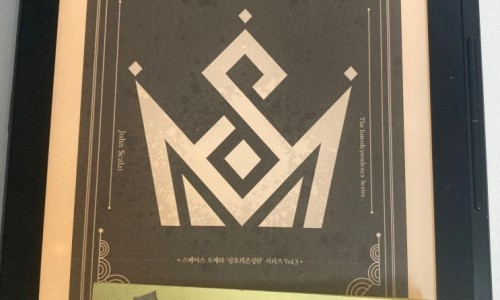

한국의 진정한 비트코인 출판사라고 할 수 있는 'Nonce Lab'에서 출간한 신간을 사토시 마켓을 통해 구입하여 받아 보았 21가지 교훈, 비트코인 낙관론 등 비트코이너 책이라고 부를 수 있는 좋은 책들을 한국에 번역해주신 논스랩에 다시한번 감사의 말씀을 드립니다.
책은 75페이지 정도로 매우 짧은 편이고, 그 마저도 안에 그래픽과 인용문 + 넉넉한 공백으로 30% 정도 차 있기 때문에 실제 페이지수는 50페이지 남짓의 짧은 책입니다.
저도 읽기 시작해서 약 40분 만에 다 읽었습니다.
아마 대부분의 내용은 이미 저도 알고 있는 내용이기에 빨리 빨리 읽을 수 있었던 것 같습니다.
내용 자체는 비트코인과 연관되어 쓸때없는 개소리 없이 훌륭합니다만 소장점수에서 비교적 낮은 4점을 기록한 이유는 이대부분의 내용이 사실 Chat GPT와 같은 검색엔진/인공지능 에서 쉽게 물어보고 이해할 수 있으며, 제가 가장 중요하게 생각하는 저자의 주관과 해석이 하나도 안 들어간 책이기 때문입니다.
따라서 매우 재미있는 헝거게임 같은 소설이 보통 받는 3~4점을 소장점수로 주었습니다.
끝.
혹시 오해할까봐 첨언합니다만, 제가 주는 '소장점수'는 책 자체의 평가라기 보다는 후손에게 남기고 싶은 책이라는 관점으로 주는 점수입니다.
더불어 저는 수잔콜린스와 존 스컬지의 아주 큰 펜이기도합니다.
(꺄악 수잔 아줌마 너무 좋아~)
